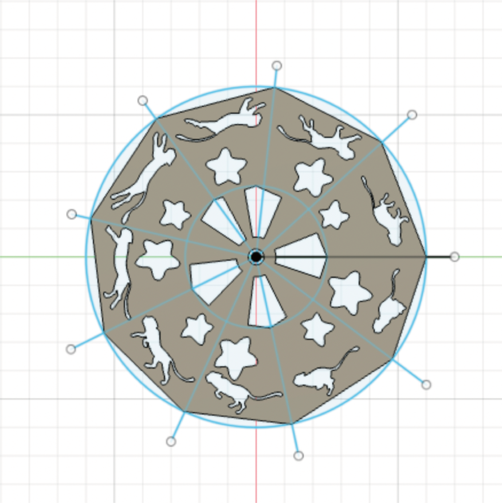
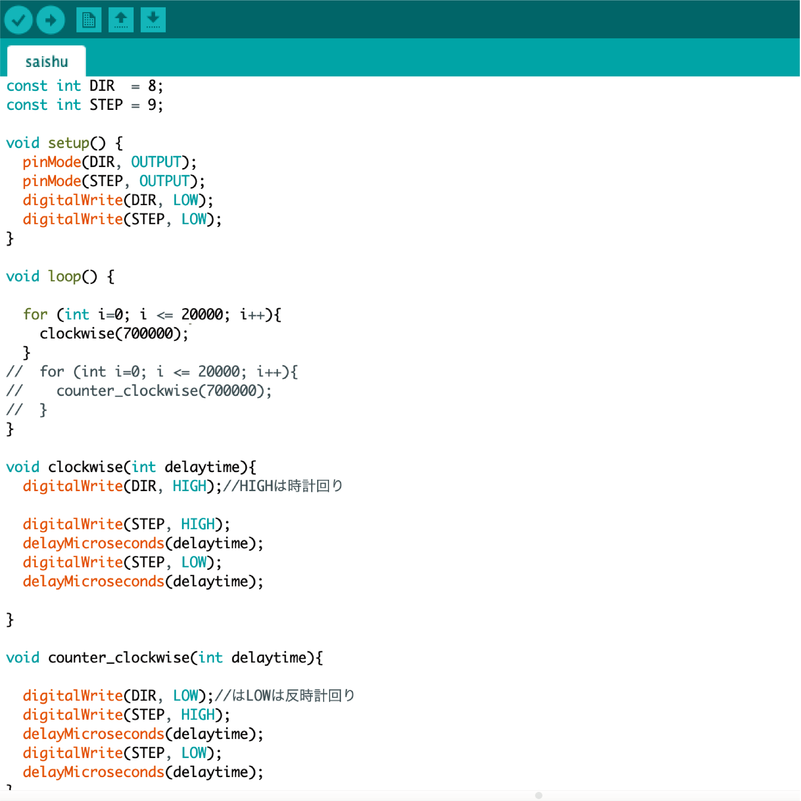

Cat para para light
2021
Fusion 360 / 3D printer / Arduino

個人作品「猫のパラパラライト」
・ターゲット層・
今回ターゲットにしたのは子育てをしている親と子供である。親と子供が寝ながら楽しめ、リラックスできるようなものがあったらいいのではという思いから制作した。私は妹と7歳年が離れておりよく妹を育てていた親を見てきた。その中で子供の寝付きが悪かったり、寝かしつけている間は親も何もできなくて辛い、といった言葉をよく聞いていた。そのため親も子供も見て楽しめ、見ていると眠くなってしまうようなそんな機械を制作したかった。
・制作過程・
猫のパラパラライトを作るにあたり、まずは装置本体の部分をFusion360をして制作していった。当初は光を分散させないためにドーム型の本体を制作しようとしていたが、3Dプリンターでの出力がサイズや模様の形問題から正常に行うことができなかった。そのため、今回は写真のように柄がある部分は平面として出力を行なった。


本体が完成した後は本体を回転させる装置をステッピングモーターを使用して制作した。当初ステッピングモーターを回転させると共にネオピクセルも使用できるようなプログラミングを考えていたが、本体の猫の柄が小さくネオピクセルの光の強さでは正確に柄を写すことができなかったため、今回はスマホのライトを使用することとした。

最終的にターゲット層にマッチした柔らかい雰囲気の装置を制作することができた。
使用の様子はこちら→https://youtube.com/shorts/CquVihAbqiE?feature=share